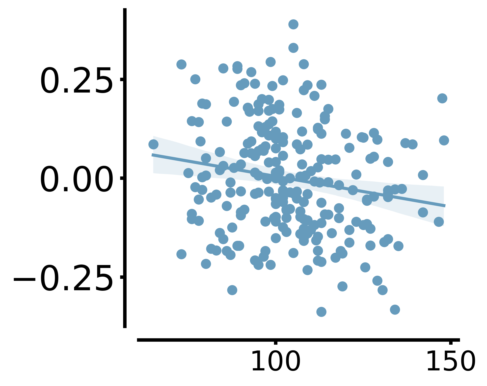

Linking gene mutations to imaging phenotype deviations in autism
This example shows how to translate mouse mutation patterns to human and compare with imaging phenotype deviations in autism.
See the this page for more introduction of this tutorial.
[1]:
import pandas as pd
import numpy as np
from nilearn import image,plotting
from scipy import stats
import seaborn as sns
import warnings
warnings.filterwarnings('ignore')
import matplotlib.image as mpimg
from matplotlib import pyplot as plt
import pickle
import os
[2]:
import transbrain as tb
load deviation pattern
[3]:
human_deviation_pattern = pd.read_csv('z_autism_regress.csv') # Deviant patterns in autistic individuals
[4]:
human_deviation_pattern.set_index('Unnamed: 0',inplace=True,drop=True)
[5]:
mouse_mutation_pattern = pd.read_csv('mouse_mutation_pattern.csv') # Deviant patterns in autism mouse models
[6]:
mouse_mutation_pattern.set_index('Unnamed: 0',inplace=True,drop=True)
translating mouse mutation patterns to human
[7]:
Transformer = tb.trans.SpeciesTrans('bn')
INFO:root:Initialized for bn atlas.
[8]:
help(Transformer.mouse_to_human)
Help on method mouse_to_human in module transbrain.trans:
mouse_to_human(phenotype: pandas.core.frame.DataFrame, region_type: Literal['cortex', 'subcortex', 'all'] = 'cortex', normalize: bool = True, restore: bool = False) -> pandas.core.frame.DataFrame method of transbrain.trans.SpeciesTrans instance
Translate mouse phenotype to human.
Parameters
----------
phenotype : pd.DataFrame
Mouse phenotype DataFrame (regions × phenotypes).
region_type : {'cortex', 'subcortex', 'all'}, optional
The brain region type to translate. Default is 'cortex'.
normalize : bool, optional
Whether to normalize data before translation. Default is True.
restore : bool, optional
Whether to restore values back to original scale after translation. Only used if normalize is True.
Please enable this parameter with caution, unless you are certain that the distributions of this phenotype are consistent between the two species.
Returns
-------
pd.DataFrame
Translated human phenotype DataFrame (regions × phenotypes).
[9]:
mutation_trans_in_human = Transformer.mouse_to_human(mouse_mutation_pattern,region_type='all')
INFO:root:Successfully translated mouse all phenotypes to human.
individual gene risk scores based on mouse model
[10]:
cross_species_autism_dataframe = pd.DataFrame()
for i in range(human_deviation_pattern.shape[0]):
row_data = human_deviation_pattern.iloc[i].values
corr_l = []
for j in range(5):
m_data = mutation_trans_in_human.iloc[:,j].values
corr_ = stats.pearsonr(row_data,m_data)[0]
corr_l.append(corr_)
cross_species_autism_dataframe[i] = corr_l
cross_species_autism_dataframe = cross_species_autism_dataframe.T
cross_species_autism_dataframe.index = human_deviation_pattern.index
cross_species_autism_dataframe.columns = mutation_trans_in_human.columns.values
load AHBA gene expression
[12]:
AHBA_ex = pd.read_csv('ahba_expression.csv') # AHBA expression in region level
[13]:
AHBA_ex.set_index('gene_symbol',inplace=True,drop=True)
individual gene risk scores based on AHBA
[14]:
AHBA_autism_dataframe = pd.DataFrame()
for i in range(human_deviation_pattern.shape[0]):
row_data = human_deviation_pattern.iloc[i].values
corr_l = []
for j in range(5):
m_data = AHBA_ex.iloc[j].values
corr_ = stats.pearsonr(row_data,m_data)[0]
corr_l.append(corr_)
AHBA_autism_dataframe[i] = corr_l
AHBA_autism_dataframe = AHBA_autism_dataframe.T
AHBA_autism_dataframe.index = human_deviation_pattern.index
AHBA_autism_dataframe.columns = mutation_trans_in_human.columns.values
correlate risk scores
[15]:
stats.pearsonr(AHBA_autism_dataframe.values.flatten(),cross_species_autism_dataframe.values.flatten())
[15]:
PearsonRResult(statistic=0.19780599996495293, pvalue=9.645342333400538e-12)
[16]:
fig,ax=plt.subplots(1,1,figsize=(5,3),dpi=400)
ax.spines['right'].set_visible(False)
ax.spines['top'].set_visible(False)
ax.tick_params(labelsize=15)
for spine in ax.spines.values():
spine.set_position(('outward', 10))
ax.set_ylim(-0.5,0.5)
ax.set_yticks([-0.3,0.0,0.3])
ax.set_xlim(-0.5, 0.5)
ax.set_xticks([-0.4,0.0,0.4])
ax.spines['left'].set_linewidth(2.5)
ax.spines['bottom'].set_linewidth(2.5)
ax.tick_params(axis='x', labelsize=20, width=2.5)
ax.tick_params(axis='y', labelsize=25, width=2.5)
sns.regplot(x=AHBA_autism_dataframe.values.flatten(),y=cross_species_autism_dataframe.values.flatten(),color='#669bbc', scatter_kws={'color': '#669bbc', 'edgecolor': '#669bbc', 'linewidths': 1,'alpha':1,'s':40})
plt.tight_layout()

correlate risk scores in specific gene
[17]:
dict_gene_ = {}
for gene in ['Dvl1','Magel2','Slc6a4','Sgsh','Shank3--']:
AHBA_scores = AHBA_autism_dataframe[gene].values
mouse_mutation_scores = cross_species_autism_dataframe[gene].values
r,p = stats.pearsonr(AHBA_scores,mouse_mutation_scores)
dict_gene_[gene] = (r,p)
[18]:
dict_gene_
[18]:
{'Dvl1': (0.31097966299833013, 1.2856342421455238e-06),
'Magel2': (0.4539929971213872, 3.0064151593370794e-13),
'Slc6a4': (0.015197117448081244, 0.8175170464931003),
'Sgsh': (0.002248242177818731, 0.9727707705317751),
'Shank3--': (0.20016237908524429, 0.0021402800433741828)}
correlating sythetic mutation pattern with AHBA gene expression
[19]:
dict_gene_ = {}
for gene1,gene2 in zip(['DVL1','MAGEL2','SLC6A4','SGSH','SHANK3'],['Dvl1','Magel2','Slc6a4','Sgsh','Shank3--']):
r,p = stats.pearsonr(AHBA_ex.T[gene1].values,mutation_trans_in_human[gene2].values)
dict_gene_[gene1] = (r,p)
[20]:
dict_gene_
[20]:
{'DVL1': (0.09730098359735115, 0.2764762751949792),
'MAGEL2': (0.3526186809312027, 4.78449085894465e-05),
'SLC6A4': (-0.062062969713091054, 0.4882044955368892),
'SGSH': (0.04501704457506566, 0.6152770360499245),
'SHANK3': (-0.06759348765582845, 0.4502055153591825)}
[21]:
dict_gene_ = {}
for gene1,gene2 in zip(['DVL1','MAGEL2','SLC6A4','SGSH','SHANK3'],['Dvl1','Magel2','Slc6a4','Sgsh','Shank3--']):
r,p = stats.pearsonr(AHBA_ex.T[gene1].values[:105],mutation_trans_in_human[gene2].values[:105])
dict_gene_[gene1] = (r,p)
[22]:
dict_gene_
[22]:
{'DVL1': (0.09163004800347647, 0.35255399643853036),
'MAGEL2': (0.5926688876223712, 2.729502948534346e-11),
'SLC6A4': (-0.008573793435634278, 0.9308263894863134),
'SGSH': (0.1400033418271194, 0.15431322372547143),
'SHANK3': (0.09513931972764542, 0.33433944229094237)}
[23]:
fig,ax=plt.subplots(1,1,figsize=(5,4),dpi=400)
ax.spines['right'].set_visible(False)
ax.spines['top'].set_visible(False)
ax.tick_params(labelsize=15)
for spine in ax.spines.values():
spine.set_position(('outward', 10))
ax.set_ylim(-4.5,4.5)
ax.set_yticks([-3,0,3])
ax.set_xlim(-3.5, 3.5)
ax.set_xticks([-2,0,2])
ax.spines['left'].set_linewidth(2.5)
ax.spines['bottom'].set_linewidth(2.5)
ax.tick_params(axis='x', labelsize=20, width=2.5)
ax.tick_params(axis='y', labelsize=25, width=2.5)
sns.regplot(x=stats.zscore(mutation_trans_in_human['Magel2'].values.flatten()),y=stats.zscore(AHBA_ex.T['MAGEL2'].values.flatten()),color='#669bbc', scatter_kws={'color': '#669bbc', 'edgecolor': '#669bbc', 'linewidths': 1,'alpha':1,'s':40})
plt.tight_layout()

load behavior data
[25]:
autism_meta = pd.read_csv('meta_info_abide.csv')
autism_meta['SUB_ID'] = ['sub-00{}'.format(i) for i in autism_meta['SUB_ID'].values]
autism_meta.set_index('SUB_ID',inplace=True,drop=True)
autism_info = human_deviation_pattern.index.values
autism_meta = autism_meta.T[autism_info].T
[26]:
behavior_l = ['FIQ','VIQ','PIQ','ADOS_COMM','ADOS_SOCIAL','ADOS_STEREO_BEHAV']
[27]:
autism_meta = autism_meta[behavior_l]
[28]:
autism_meta
[28]:
| FIQ | VIQ | PIQ | ADOS_COMM | ADOS_SOCIAL | ADOS_STEREO_BEHAV | |
|---|---|---|---|---|---|---|
| SUB_ID | ||||||
| sub-0050952 | 134.0 | 139.0 | 120.0 | 7.0 | 10.0 | 4.0 |
| sub-0050953 | 132.0 | 139.0 | 117.0 | 3.0 | 10.0 | 3.0 |
| sub-0050954 | 78.0 | 79.0 | 80.0 | 3.0 | 8.0 | 4.0 |
| sub-0050955 | 93.0 | 96.0 | 91.0 | 3.0 | 11.0 | 3.0 |
| sub-0050956 | 115.0 | 115.0 | 110.0 | 2.0 | 8.0 | 5.0 |
| ... | ... | ... | ... | ... | ... | ... |
| sub-0050528 | 100.0 | 90.0 | 109.0 | 5.0 | 7.0 | 1.0 |
| sub-0050529 | 128.0 | 122.0 | 127.0 | 4.0 | 9.0 | 1.0 |
| sub-0050530 | 106.0 | 120.0 | 91.0 | 3.0 | 10.0 | 0.0 |
| sub-0050531 | 112.0 | 104.0 | 119.0 | 1.0 | 11.0 | 0.0 |
| sub-0050532 | 84.0 | 87.0 | 81.0 | 2.0 | 6.0 | -9999.0 |
233 rows × 6 columns
[29]:
magel2_scores_based_on_mouse = cross_species_autism_dataframe['Magel2'].values
[30]:
gene_behavior_l = []
gene_clinic_dataframe = pd.DataFrame()
for name_ in autism_meta.columns.values:
behavior_pattern = autism_meta[name_].values
behavior_pattern = np.array([float(x) if str(x).replace('.', '', 1).isdigit() else np.nan for x in behavior_pattern])
mask = ~np.isnan(behavior_pattern) & (behavior_pattern!=-9999.0)
arr1_filtered = magel2_scores_based_on_mouse[mask]
arr2_filtered = behavior_pattern[mask]
corr = stats.pearsonr(arr1_filtered,arr2_filtered)
gene_behavior_l.append(corr)
gene_clinic_dataframe['magel2'] = gene_behavior_l
[31]:
gene_clinic_dataframe
[31]:
| magel2 | |
|---|---|
| 0 | (-0.17657536932333698, 0.00701340405507845) |
| 1 | (-0.07795466860082743, 0.2358864146002949) |
| 2 | (-0.18717492106148584, 0.004224509163950006) |
| 3 | (-0.08570567055260474, 0.25533156937957996) |
| 4 | (0.0025750174236128893, 0.9727870157319674) |
| 5 | (-0.018771597619276183, 0.8046910213502325) |
[32]:
behavior_pattern = autism_meta['FIQ'].values
behavior_pattern = np.array([float(x) if str(x).replace('.', '', 1).isdigit() else np.nan for x in behavior_pattern])
mask = ~np.isnan(behavior_pattern) & (behavior_pattern!=-9999.0)
[33]:
arr1_filtered = magel2_scores_based_on_mouse[mask]
arr2_filtered = behavior_pattern[mask]
[34]:
stats.pearsonr(arr1_filtered,arr2_filtered)
[34]:
PearsonRResult(statistic=-0.17657536932333698, pvalue=0.00701340405507845)
[35]:
fig,ax=plt.subplots(1,1,figsize=(5,4),dpi=400)
ax.spines['right'].set_visible(False)
ax.spines['top'].set_visible(False)
ax.tick_params(labelsize=15)
for spine in ax.spines.values():
spine.set_position(('outward', 10))
ax.spines['left'].set_linewidth(2.5)
ax.spines['bottom'].set_linewidth(2.5)
ax.tick_params(axis='x', labelsize=20, width=2.5)
ax.tick_params(axis='y', labelsize=25, width=2.5)
sns.regplot(x=arr2_filtered,y=arr1_filtered,color='#669bbc', scatter_kws={'color': '#669bbc', 'edgecolor': '#669bbc', 'linewidths': 1,'alpha':1,'s':40})
plt.tight_layout()
